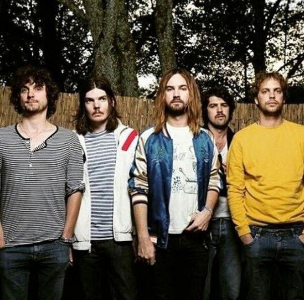
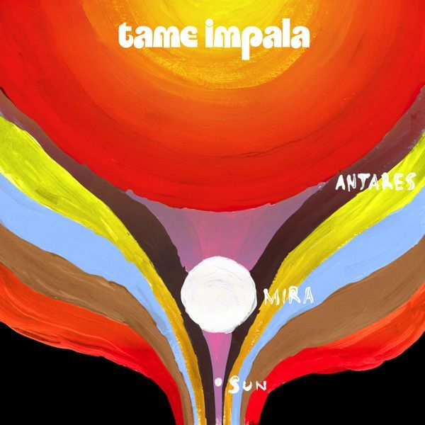
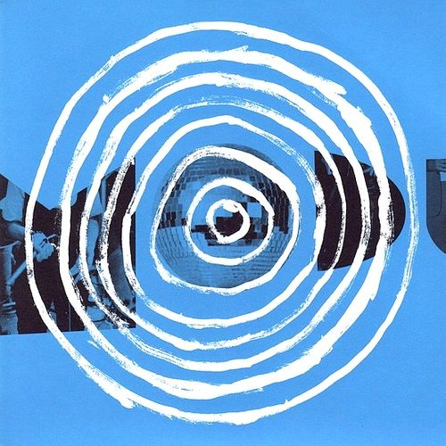
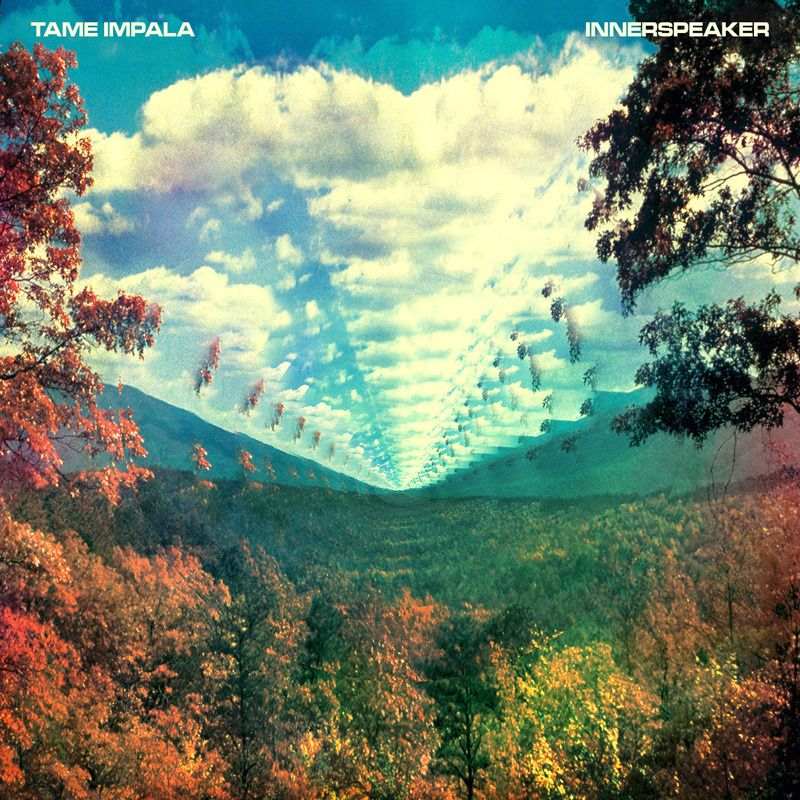
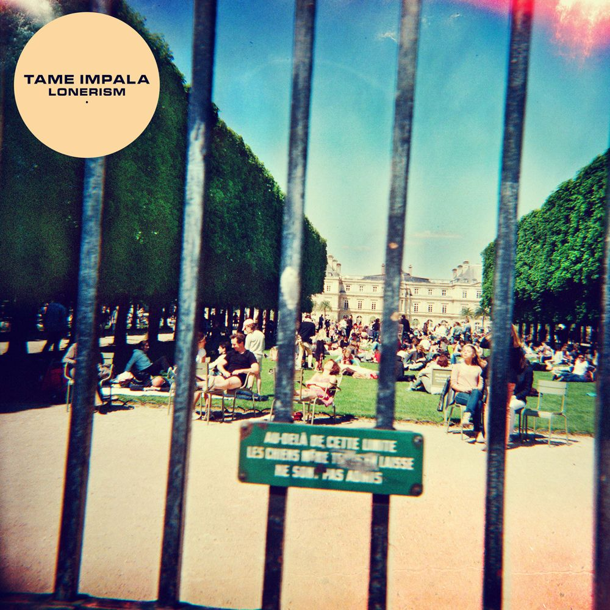
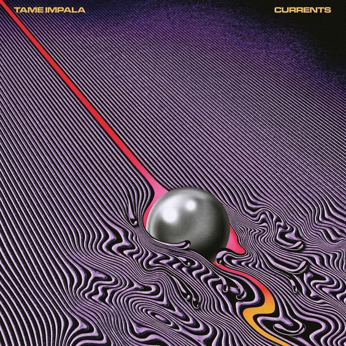
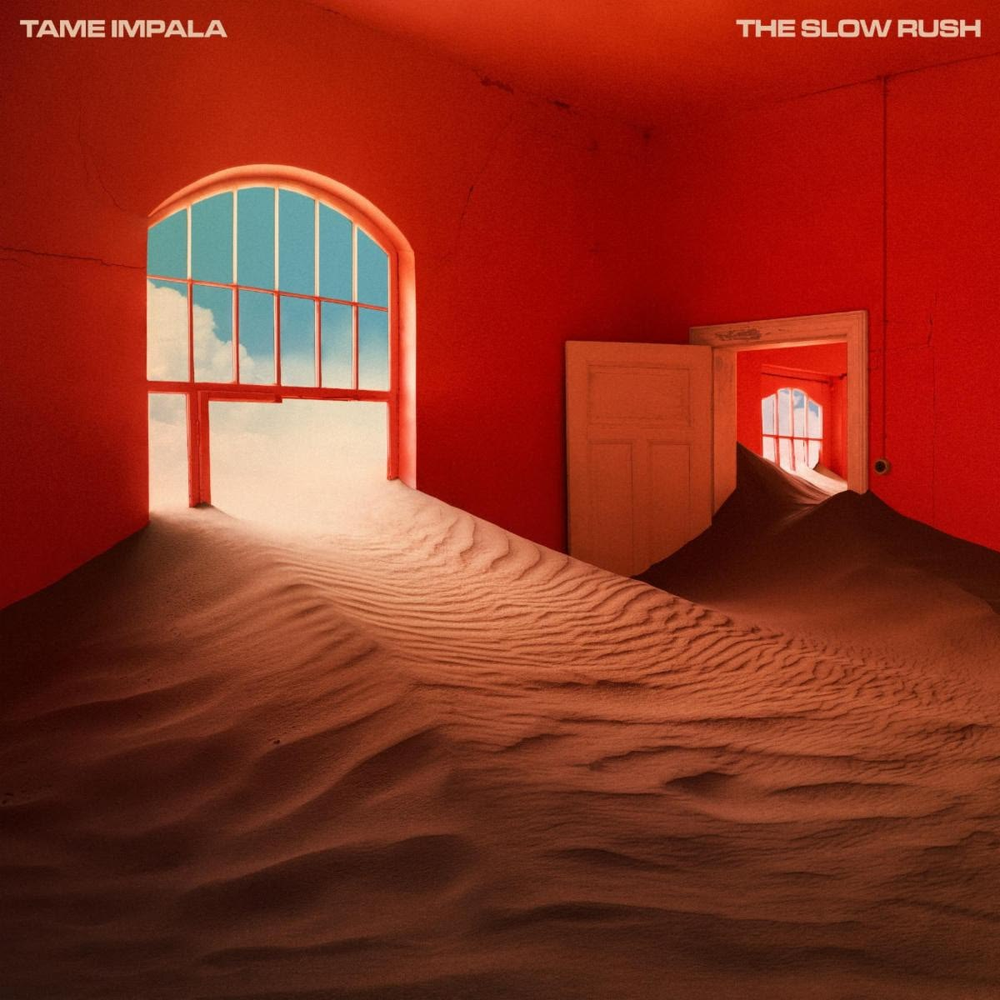
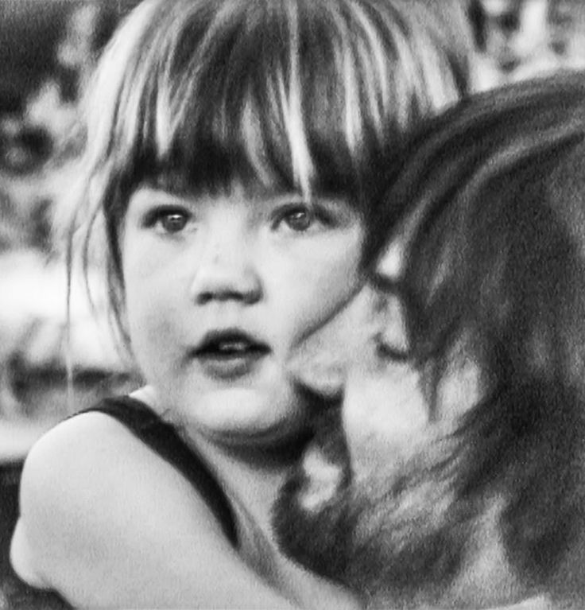

2007-2008
De "band" wordt samengesteld

Kevin Parker stichte Tame Impala zelf op, de band is er alleen maar voor Live optredens.
2008

Tame Impala Brengt zijn eerste officiële release uit met de 'Tame Impala EP' met hits zoals 'Half Glass Full Of Wine' en 'Slide Through My Fingers'
2009

Sundown Syndrome wordt zijn twee officiële release vooral gefocust op de indie/psych genre.
2010

Innerspeaker wordt gezien als de 'doorbraak' album van Tame Impala, helemaal alleen geschreven door Kevin Parker.
2012

Lonerism, (waar veel van mijn favoriete tracks op zitten) staat bekend om zijn meer expirimenteel en melancholischer gevoel. Met tracks zoals 'Mind Mischief', 'It Feels Like We Only Go Backwards' en 'Nothing That Has Happened So Far that Has Been Anything We Could Control' (mijn persoonlijke favoriet na Let It Happen). Wat maakte dat Tame Impala wereldwijd bekend werd
2015

Éen van mijn favorietste albums van aller tijden, Currents staat bekend voor de sound shift van gitaar naar R&B. Het wordt als meeste gezien als de beste album aller tijde (met meeste bedoel ik Amine) met liedjes zoals 'The Less I Know The Better' en 'Let It Happen' (Mijn favoriet). Currents heeft Tame Impala vele populairder gemaakt, 'The Less I Know The Better' heeft meer dan 2 Miljard streams op Spotify.
2020

The Slow Rush staat heel erg bekend voor zijn meer nostalgisch en tijd-gefocust thema. Hier was opnieuw de stijl wat veranderd, in plaats van 'rock' was het nu meer 'slow' en 'flow-gericht'. Met liedjes zoals 'Borderline' en 'Lost In Yesterday' maakte dit een heel goed liedje tijdens COVID.
2025-2026

En tot slot, Deadbeat. Deadbeat is Tame Impala's 5e studio album en draait meer om zijn persoonlijke gevoelens van onzekerheid en dat hij volwassene moet worden (hij is een vader) Met hits zoals 'Loser' en 'Dracula' (waar een heel slechte remix van werd gemaakt) met een grotere focus op dance, rave en electronisch gitaar. Hij heeft ook de 'Deadbeat Tour' aangekondigd, HIJ KOMT NAAR ANTWERPEN!!! kleine update: ik heb hem niet kunnen zien :(